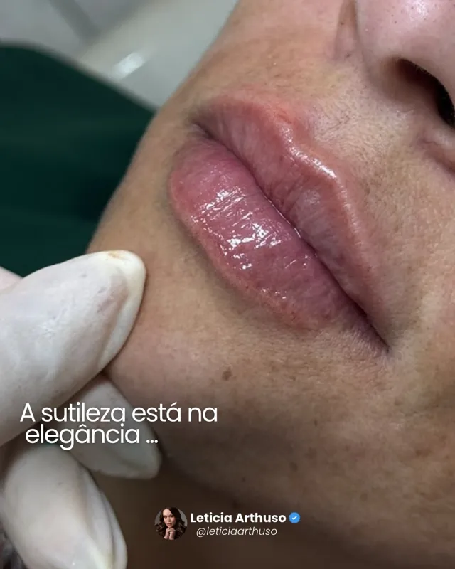
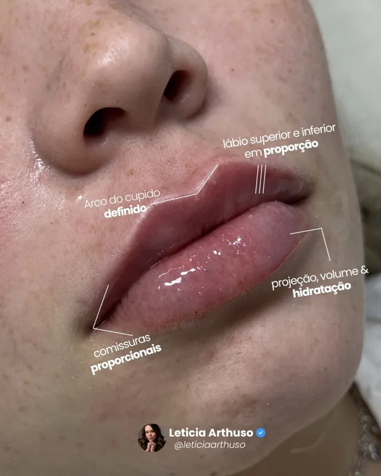
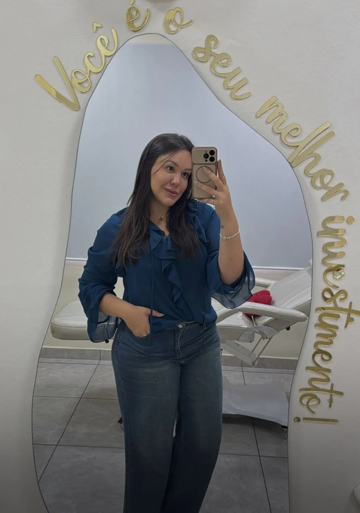

Prazer, Letícia
Harmonização é a minha paixão desde antes da Odontologia
Sou formada em Odontologia e encontrei na harmonização facial uma forma de unir ciência, sensibilidade e propósito. Quero que você se olhe no espelho e pense: “eu continuo sendo eu, só que ainda mais bonita”.
O que eu faço
Toque em um procedimento para ver como ele funciona.
Depoimentos e resultados
“Foi um verdadeiro achado aqui em São João del Rei”
Desde a primeira conversa, me senti super à vontade para falar exatamente o que eu queria. Ela me ouviu, fez uma avaliação personalizada e me explicou cada detalhe.


Botox. Arraste para comparar. “Pequenos ajustes fazem uma grande diferença, mantendo a essência da paciente.”
Fotos e vídeos do consultório
Arraste para o lado



Entenda cada procedimento
Onde você quer cuidar?
Toque nos pontos do rosto ou escolha pelo nome. Nem todo mundo precisa de tudo, e é a avaliação que define o que faz sentido para você.


O consultório
“Você é seu melhor investimento”
A frase está escrita em dourado no espelho do consultório, no bairro Matozinhos. Atendimento com hora marcada, individual do começo ao fim.
Av. Josué de Queirós, 349, MatozinhosSão João del Rei/MG · abrir no mapa